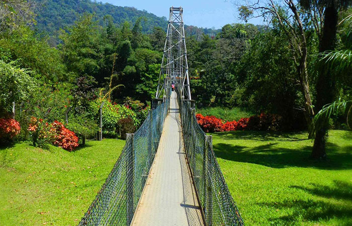
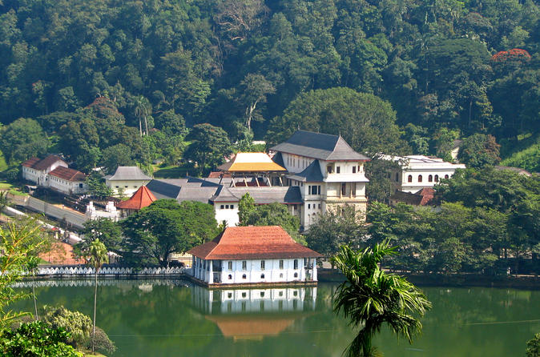
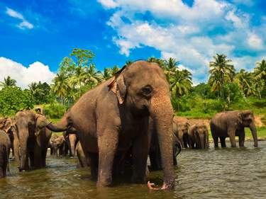
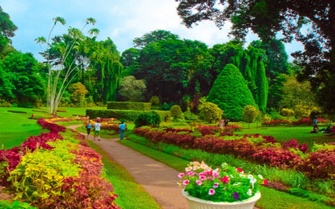

Kandy, the last royal capital of Sri Lanka is a major tourist destination. (115kM from Colombo at 465 meters above sea level). Famous for the Temple of the Tooth and many other temples. The city could be called the cultural capital of the island.
Major Attractions
- Sacred temple of tooth relics , the holiest venue in Sri Lanka.
- The largest botanical garden in the country.
- Pinnawela Elephant Orphanage.
- Knuckles Mountain Range.
- An evening walk around the artificial kandy lake would be most relaxing.
- Cultural dancing and performances show.



